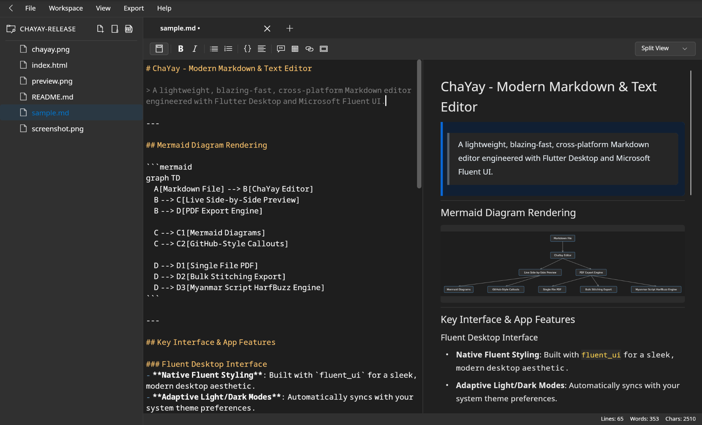

Distraction-Free Writing.
Lightweight Cross-Platform Markdown Editor.
ChaYay (ချရေး) is a lightweight, cross-platform Markdown & text editor designed with Microsoft's Fluent UI system. Built natively with Flutter to deliver fast, distraction-free writing on Windows, Linux, and macOS.
Experience Fluent Design
Explore ChaYay's crisp typography, dark mode acrylic interface, and distraction-free writing environment.

Built for Writers & Developers
Everything you need for seamless text editing without the memory overhead of web browsers disguised as desktop apps.
Native Desktop Speed
Compiled natively with Flutter C++ desktop runner. Launches in under a second with minimal RAM consumption compared to Electron.
Fluent UI & Acrylic Design
Designed adhering to Microsoft Fluent UI guidelines. Features dark mode, translucent Mica backgrounds, and clean control elements.
PDF Export & Script Shaping
Export Markdown notes to clean PDF documents with precise typography formatting, including complex script shaping (HarfBuzz-backed Myanmar rendering).
Natural File Explorer
Built-in sidebar file workspace with natural numerical sorting algorithm, inline renaming (`F2`), and context menu file operations.
Cross-Platform Ready
Optimized for Windows 10/11 with active development for Linux desktop (KDE/GNOME) and native menubar bridges.
Private & Local-First
Your files stay entirely on your local hard drive. Zero telemetry, zero cloud lock-in, and instant opening of local text files.
Accelerator Keys Cheatsheet
Boost your editing speed with native global keyboard shortcuts